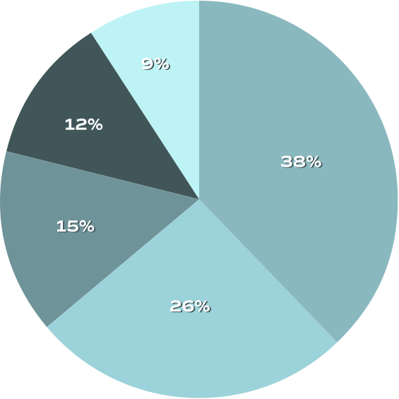

 38% Technology
38% Technology
26% Consumer
15% Resources
12% Biotech
9% Specialized
Data as of June 30, 2022.
JSJ Investments is a Texas-based family office with a 20-year history of investing in promising businesses. We invest in small- to mid-cap companies that are on the precipice of major growth and need strategic investment to facilitate it. Our portfolio includes companies in North America, Europe, and across the globe.
We provide access to funds — whether in the form of seed money, bridge financing, or simply an injection of capital. The companies we invest in have strong action plans with clearly identified targets. They are led by strong management with expertise and a track record of successes.
Our portfolio includes public and imminently public companies. We invest in private placements, secondary offerings, and IPOs. We also have extensive experience with alternative funding structures.
38% Technology
Data as of June 30, 2022.
JSJ Investments was built on the belief that robust relationships result in strong synergies and better returns — for us and the companies that we invest in. Our modern approach to finance leads us to work with like-minded companies that are forward-thinking and innovative.
We have spent decades investing internationally in companies across a wide variety of industries. The team at JSJ Investments has the passion, expertise, and commitment to provide strategic support for companies ready to accelerate their growth.